The best known solutions are shown below.
| n=3 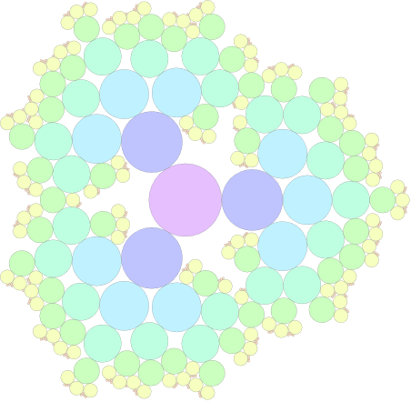 r=6.193+ (Joe DeVincentis) r=6.000+ (Maurizio Morandi) r=5.957+ (Joe DeVincentis) r=5.15+ (Erich Friedman) | n=4 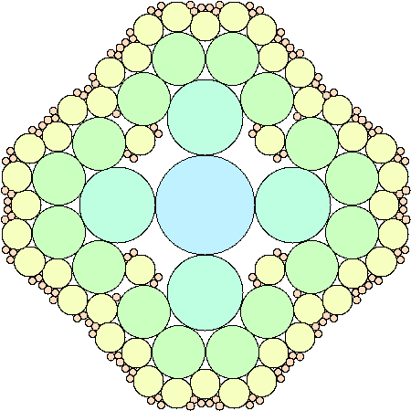 r=4.326+ (Joe DeVincentis) r=3.75+ (Erich Friedman) n=5 | 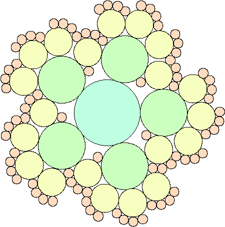 r=3.515+ (Joe DeVincentis) r=3.12+ (Erich Friedman) n=6 | 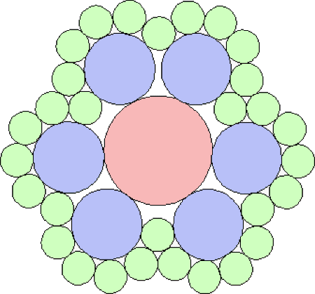 r=2.882+ (Maurizio Morandi) r=2.83+ (Erich Friedman) n=7 | 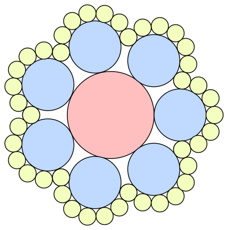 r=2.494+ (Erich Friedman) n=8 | 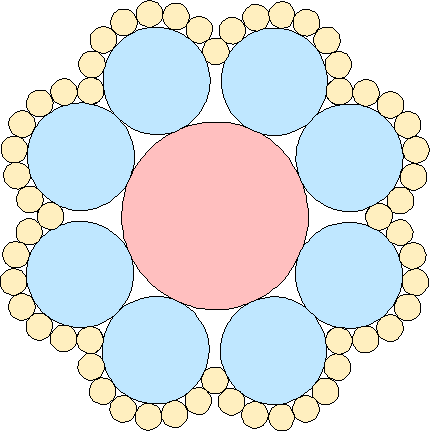 r=2.330+ (Maurizio Morandi) r=2.329+ (Erich Friedman) n=9 | 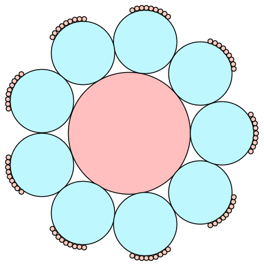 r=2.082+ (Erich Friedman) n=10 | 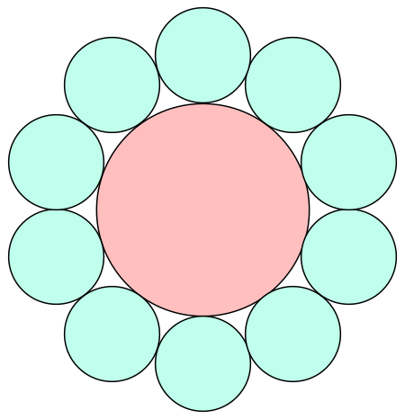 r=(5+√5)/4=1.809+ (Erich Friedman) |
| n=3 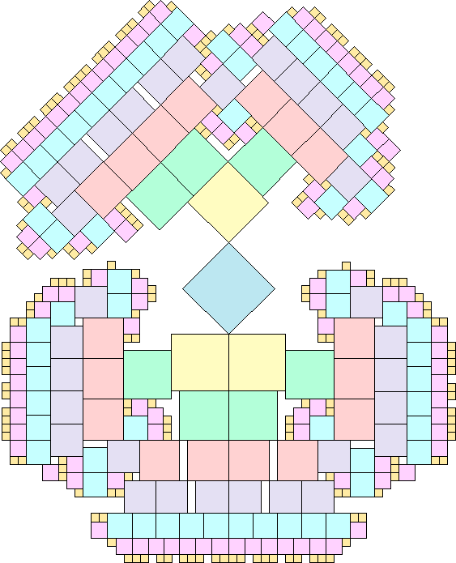 s=8 (Maurizio Morandi) s=7.5 (Joe DeVincentis) s=7 (Maurizio Morandi) | n=4 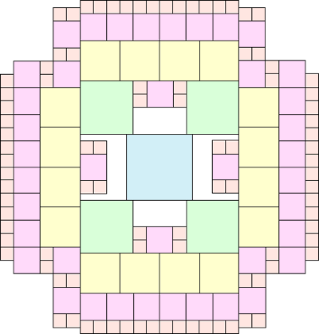 s=5 (Maurizio Morandi) n=5 | 
s=4 (Maurizio Morandi) s=3.5 (Jeremy Galvagni) n=6 | 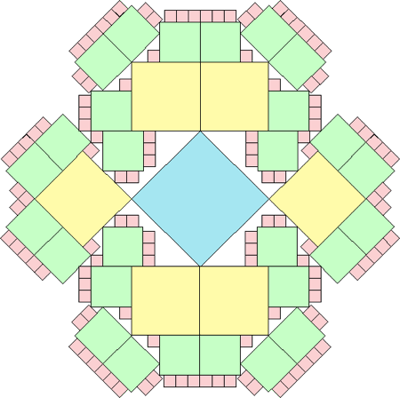 s=2+√2=3.414+ (Maurizio Morandi) n=7 | 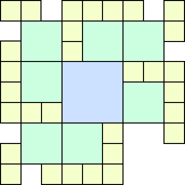 s=3 (Bryce Herdt) n=8 | 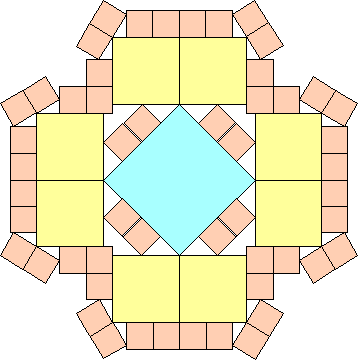 s=2.658+ (Maurizio Morandi) s=2.658+ (Bryce Herdt) s=2.544+ (Joe DeVincentis) s=2.5 (Erich Friedman) n=9 | 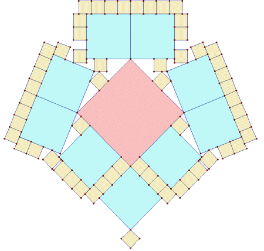 s=1+√2=2.414+ (Jeremy Galvagni) n=10 | 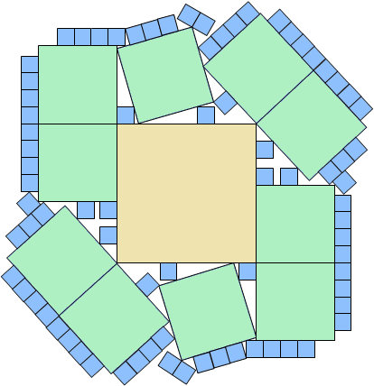 s=2.276+ (Maurizio Morandi) s=2.25 (Joe DeVincentis) s=2.25 (Jeremy Galvagni) n=11 | 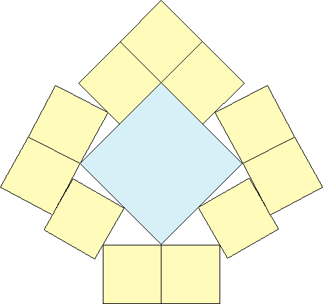 s=2.042+ (Maurizio Morandi) s=2.013+ (Jeremy Galvagni) n=12 | 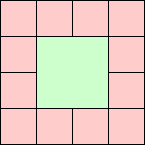 s=2 (George Sicherman) |
| n=3 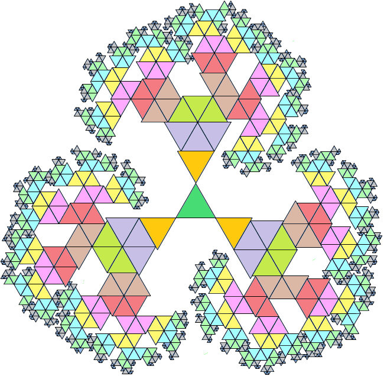 s=12 (Maurizio Morandi) s=11 (Jean Hoffman) | n=4 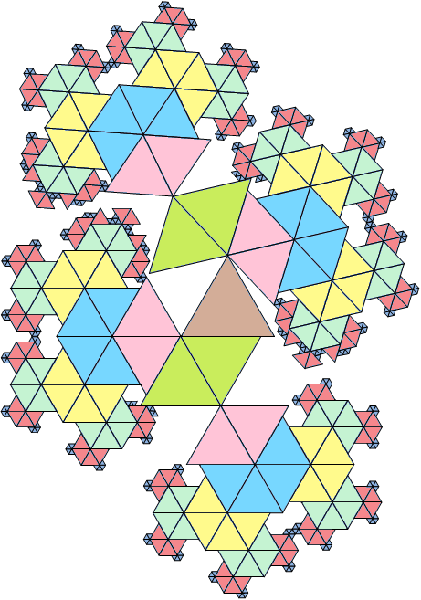 s=7.5 (Maurizio Morandi) s=7 (Jean Hoffman) n=5 | 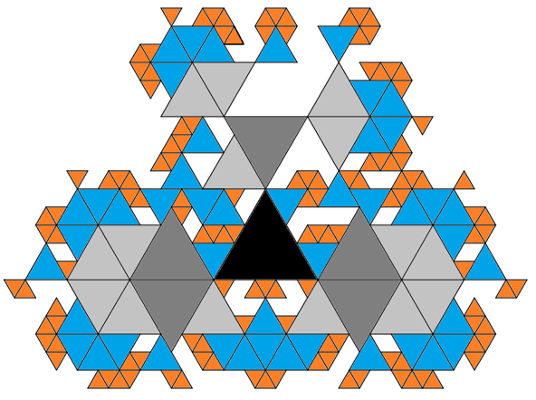 s=5 (Jean Hoffman) n=6 | 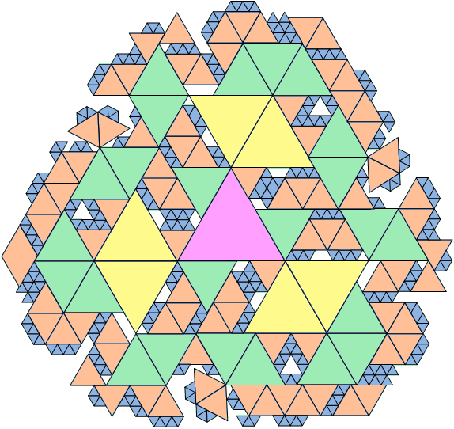 s=9/2=4.5 (Maurizio Morandi) s=4 (Jean Hoffman) n=7 | 
s=4 (Maurizio Morandi) n=8 | 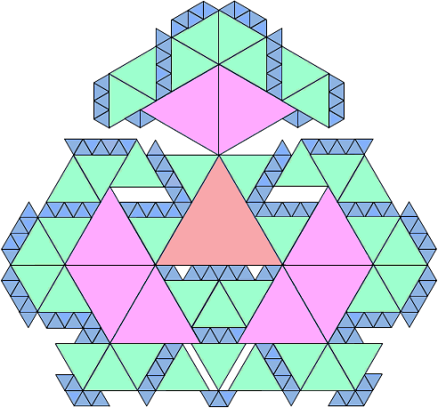 s=7/2=3.5 (Maurizio Morandi) n=9 | 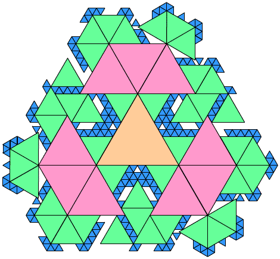 s=10/3=3.333+ (Bryce Herdt) s=3 (Erich Friedman) n=10 | 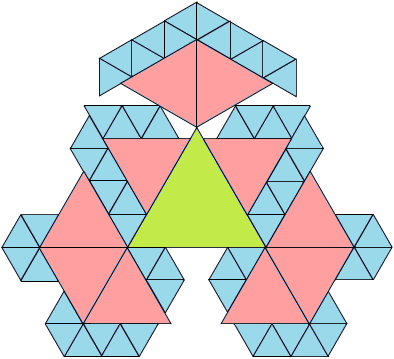 s=11/4=2.75 (Maurizio Morandi) n=12 | 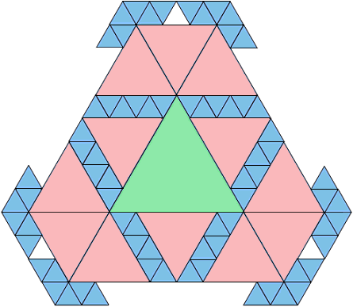 s=5/2=2.5 (Maurizio Morandi) n=18 | 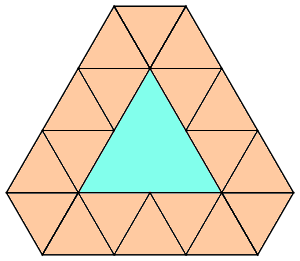 s=2 (Erich Friedman) |
If you can extend any of these results, please e-mail me. Click here to go back to Math Magic. Last updated 5/1/18.